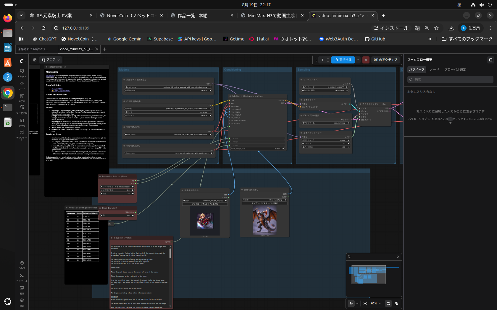
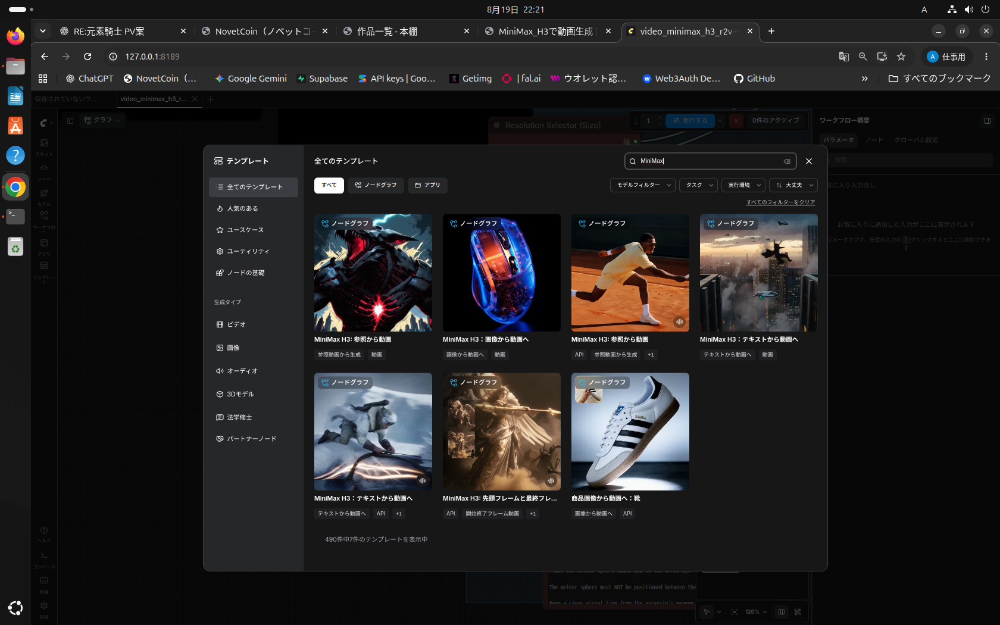
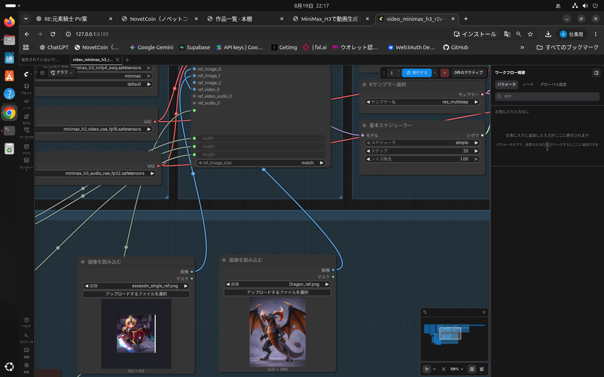
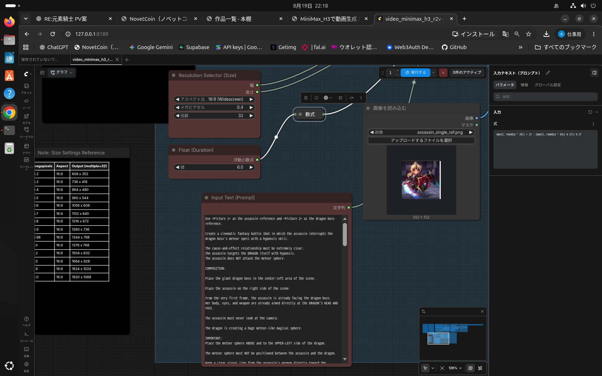

NovetCoin 開発備忘録
MiniMax H3を使った動画作成について
現在運営中のnovetcoin.comに、開発用の備忘録ページを作成し、 今回作った動画の制作過程を残しておきたいと思います。
このページは今後も不定期で更新していく予定です。
このページについて
本ページは、AIや制作過程についての備忘録として利用します。
また、本ページ内でダウンロード可能としている素材ファイルについては、 基本的に自由に利用できるものとして公開します。
※利用した外部ツール等について、当サイトからの配布は行いません。
MiniMax H3を使った動画生成をテスト
当サイト管理人が以前ハマっていたゲームタイトルについて、 そろそろ再開も近いのでは？という話をちらちら見かけるようになりました。
そこで「何かできないかな？」と考えていたところ、 ちょうどローカル環境で動画生成ができる MiniMax H3 を知りました。
生成される動画のクオリティもかなり高そうだったため、 「それなら今後のためにも一度ちゃんと動画を作ってみよう」 となったわけです。
現時点での開発環境
おそらくですが、私の環境は生成できるか・できないかという意味では、 かなりギリギリのラインだと思います。
クオリティの話ではなく、最後まで生成処理を完了できるかどうか、という意味です。
準備方法
MiniMax H3のダウンロードからセットアップまでは、 Codex（CLI） に一括で依頼しました。
ほぼ全部任せです。すいません。
準備完了後にMiniMax H3を起動
ローカルで動かすタイプのサービスでは、だいたい以下のような流れになります。
- MiniMax H3を動かすローカルサーバーを起動する
- ブラウザからローカルサーバーへアクセスする
- ブラウザ上に動画生成画面が表示される
- 画面左側のテンプレートから「MiniMax」で検索する
- 今回は「参照画像から動画生成」を選択
まずは画面全体を見てみます
最初にこの画面を見たときは、 「は？ なにこれ？ どうするのこれ？」 という感じでした。
ノードや線がたくさん表示されているので、 初見ではかなり複雑そうに見えます。
ただ、実際に触ってみると意外に簡単でした。
今回の動画生成で主に触るのは、このあたりです。
- 生成方法の選択
- 参照画像
- プロンプト
- 実行

まずはどんな方法で生成するのか選びます
画面左側のテンプレートから「MiniMax」で検索します。
今回は、 「MiniMax H3：参照から動画」 を選択しました。
今回はキャラクターやドラゴンなどの画像を参照させながら 動画を作りたかったため、このテンプレートを使用しています。

今回制作した動画では、基本的に 参照画像から動画を生成する方法を使用しました。
※使用している環境やバージョンによっては、 「参照画像から動画生成」のテンプレートが表示されない場合があります。
今回使用した環境
- ComfyUI-H3：/home/haishinapusu/tools/stable-diffusion/ComfyUI-H3
- MiniMax H3：Ref2VA
- 使用モデル：minimax_h3_ref2va_pruned_int8_convrot.safetensors
- 使用モデル：qwen3vl_32b_minimax_h3_nvfp4_awq.safetensors
- 使用モデル：minimax_h3_video_vae_fp16.safetensors
- 使用モデル：minimax_h3_audio_vae_fp32.safetensors
動画生成
初めて見ると、生成画面には色々な項目があって少しびっくりします。 ただ、実際によく触る場所はそれほど多くありません。
参照画像を選択します
次に、動画生成に使用する参照画像を設定します。
今回の例では、 キャラクター画像とドラゴン画像を参照画像として設定しています。
3枚目、4枚目など参照画像を増やしたい場合は、 上の方にある「ref_image」のうち、 まだ線がつながっていない丸をクリックしたまま 下方向へマウスを動かします。
すると線がついてくるので、 新しく追加した参照画像のノードへ接続できます。
逆に参照画像を削除したい場合は、 下側にある不要な参照画像の枠（ノード）を右クリックし、 表示されたメニューの一番下にある削除を選択します。

プロンプトを入れて実行
参照画像の準備ができたら、 生成したい動画の内容に合わせてプロンプトを貼り直します。
準備ができたら、画面右上にある 「実行する」 を押します。
生成が完了すると、 画面の一番右側に生成された動画ファイルが プレイヤーで再生できる形式で表示されます。
そこで完成した動画を確認し、 イメージと違えば参照画像やプロンプトを修正して 再度生成していきます。

- 参照画像を設定する
- 必要に応じて参照画像を追加・削除する
- プロンプトを入力する
- 動画の長さなどを設定する
- 生成する
実際に作った動画の例
ここでは今回制作した cut01.mp4 を例にします。
まず、ドラゴンタワーのプレイ画面と、 ボスとして使用するドラゴンの画像を参照画像として用意しました。
その画像をChatGPTブラウザ版にも渡し、 MiniMax H3用のプロンプトを作ってもらいました。
この動画はオープニングに使います。
1. ボス戦闘開始。
このボスは「星の一撃」という必殺技を持っています。
動画生成の一発目は、このダンジョンにいるボスが 「星の一撃」を繰り出すシーンです。
メテオのような火球を吐き出し、画面正面に向かって火球が飛んでくる。 火球は正面へ近づくにつれてどんどん大きくなり、 最後には画面を埋め尽くすようにしたい。
あとはプロンプトと参照画像を設定して生成を待ちます。
生成された動画がイメージと違った場合は、 「何を修正するのか」「何を維持するのか」を分けてChatGPTに伝えます。
また、ChatGPTが作った英語プロンプトについては日本語版も一緒に出してもらい、 「自分が指定した内容が抜けていないか？」を確認するようにしました。
全カット完成後
同じような方法で必要なカットをすべて作成します。
今回の動画では、完成した各カットを一度 音声なしで連結しました。
まず映像だけを一本につなぎ、 カットの順番や映像としてのつながりを確認しました。
BGMを生成
動画がまとまったところで、次はBGMです。
このとき私は、 「MiniMax H3があるならMusicもローカルで使えるんじゃないか？」 と思っていました。
ところが調べてみると、Musicについては自分が想定していたような ローカル環境ではなく、クラウドサービスを利用する形でした。
基本、クラウドサービス＝課金だと思っているので、 知ったときは小さく舌打ちしたのを覚えています。
そんな時は、ドラ○もんことChatGPTに相談です。
「ローカルでBGMを作成できるツールを用意して」 と相談して出てきたのが ACE-Step 1.5 です。
ACE-Step 1.5
参考にしたい音源を用意して、 「この音源のような方向性のBGMを作りたい」 と指定できるのが面白いところでした。
各種素材一覧
今回の制作で使用・生成した素材のうち、 当ページで配布するものをまとめています。
静止画像
※配布対象は当ページで明示したファイルのみです。